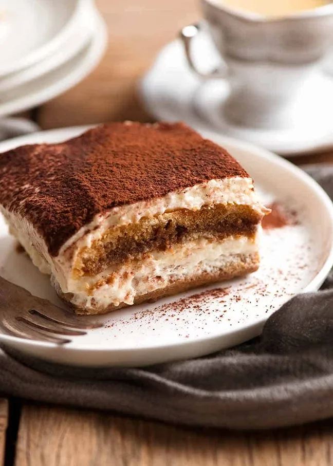

Tiramisu
Home
Description

ou will be amazed how silky rich and yet LIGHT this Tiramisu tastes!
Ingredients
- 3 eggs
- ½ cup caster sugar
- ½ tsp vanilla extract
- 8 oz mascarpone
- 1¼ cups hot espresso
- 6.5 oz lady fingers, pavesini, or savoiardi biscuits
- Cocoa
Steps
-
Beat yolks and sugar in stand mixer or electrc beater on speed 6-7 for
10 minutes or until it changes from yellow to pale yellow and is thick.
-
Add vanilla and mascarpone, beat until just combined and smooth.
Transfer mixture to a bowl and set aside.
-
Clean bowl and whisk. Add egg whites and beat until stiff (3 minutes on
speed 7).
-
Add ½ the cream mixture into egg whites. Gently fold through.
When most incorporated, add the remaining cream mixture and fold through
until just combined — don't bash out all the air in the egg
whites!
-
Mix cofee and liquor together. Quickly dip biscuits in and line the
bottom of a 8" square dish.
-
Sprea over half the cream, then top with another layer of coffee-dipped
biscuits.
- Spread with remaining cream.
-
Cover and refrigerate for at least 4-5 hours, preferably overnight.
-
Dust with cocoa powder just before serving — either before you cut
or after plating.